import pandas as pd
import matplotlib.pyplot as plt
import numpy as np
import seaborn as snsallergies = pd.read_csv('allergies.csv')
cancer = pd.read_csv('cancer.csv')
careplans = pd.read_csv('careplans.csv')
claims = pd.read_csv('claims.csv')
conditions = pd.read_csv('conditions.csv')
diabetes = pd.read_csv('diabetes.csv')
encounters = pd.read_csv('encounters.csv')
etc = pd.read_csv('etc.csv')
heart = pd.read_csv('heart.csv')
immunizations = pd.read_csv('immunizations.csv')
lungs = pd.read_csv('lungs.csv')
medications = pd.read_csv('medications.csv')
observations = pd.read_csv('observations.csv')
patients = pd.read_csv('patients.csv')
pregnancy = pd.read_csv('pregnancy.csv')
procedures = pd.read_csv('procedures.csv')Exploring general trends of the dataset
Careplans visualization
# careplans viz
careplanCounts = careplans.groupby('DESCRIPTION').size().reset_index(name='count')
careplanCounts = careplanCounts.sort_values(by='count', ascending=False)
top10Careplans = careplanCounts.head(10)
print(top10Careplans)
plt.figure(figsize=(10, 6))
plt.bar(top10Careplans['DESCRIPTION'], top10Careplans['count'], color='skyblue')
plt.xlabel('Careplan')
plt.ylabel('Count')
plt.title('Top 10 Most Frequent Medical Careplans')
plt.xticks(rotation=45, ha='right')
plt.grid()
plt.show() DESCRIPTION count
67 Stress management 830
34 Exercise therapy 719
22 Deep breathing and coughing exercises 641
57 Recommendation to avoid exercise 641
60 Respiratory therapy 641
6 Antenatal education 609
62 Routine antenatal care 609
53 Pregnancy diet education 609
27 Diabetic diet 498
26 Diabetes self management plan 498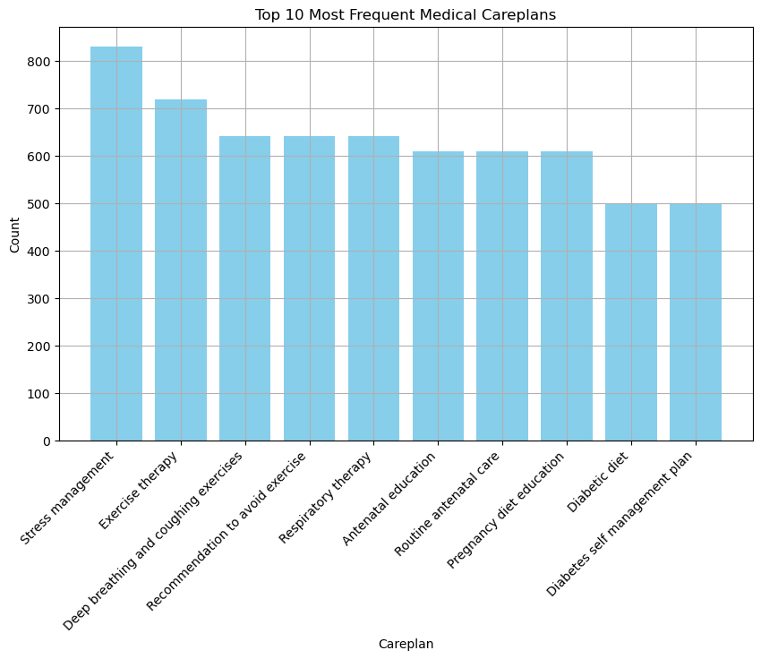
Visualizing conditions dataset
conditionsCounts = conditions.groupby('DESCRIPTION').size().reset_index(name='count')
conditionsCounts = conditionsCounts.sort_values(by='count', ascending=False)
top10Conditions = conditionsCounts.head(10)
print(top10Conditions)
plt.figure(figsize=(10, 6))
plt.grid()
plt.bar(top10Conditions['DESCRIPTION'], top10Conditions['count'], color='skyblue')
plt.xlabel('Condition')
plt.ylabel('Count')
plt.title('Top 10 Most Frequent Medical Conditions')
plt.xticks(rotation=45, ha='right')
plt.show()
#note that there is some matchup between top 10 careplans and top 10 conditions. this is good bc is expected behavior DESCRIPTION count
116 Viral sinusitis (disorder) 1125
3 Acute viral pharyngitis (disorder) 602
2 Acute bronchitis (disorder) 508
86 Prediabetes 458
52 Hypertension 373
75 Normal pregnancy 339
20 Chronic sinusitis (disorder) 329
79 Otitis media 202
110 Streptococcal sore throat (disorder) 146
85 Polyp of colon 108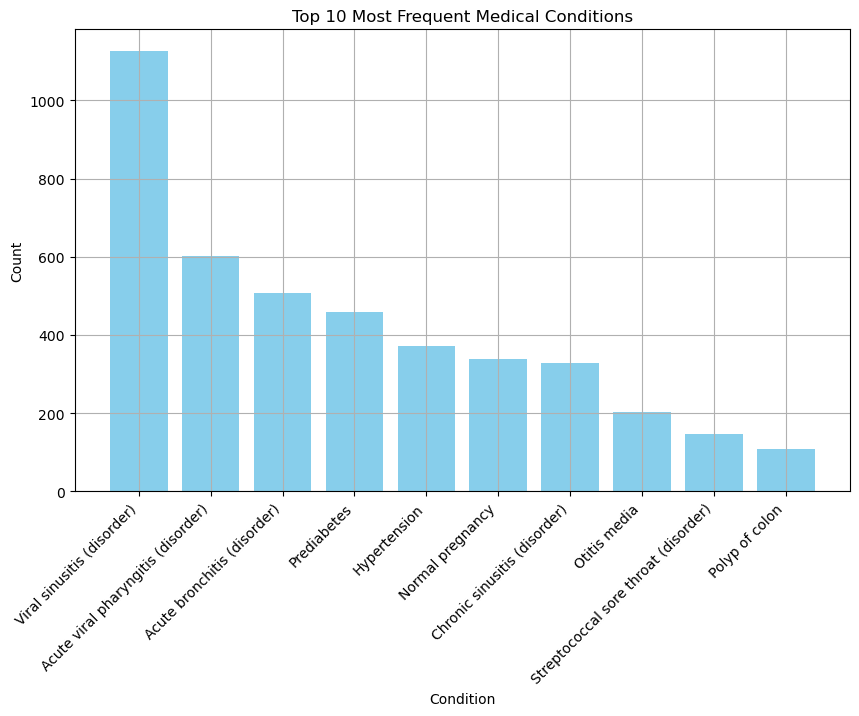
Sinusitis seems like the most common condition in our dataset, which makes sense given its link to common colds.
Visualizing encounters
#encounters viz
encountersCounts = encounters.groupby('DESCRIPTION').size().reset_index(name='count')
encountersCounts = encountersCounts.sort_values(by='count', ascending=False)
top10Encounters = encountersCounts.head(10)
print(top10Encounters)
plt.figure(figsize=(10, 6))
plt.grid()
plt.bar(top10Encounters['DESCRIPTION'], top10Encounters['count'], color='skyblue')
plt.xlabel('Encounter Type')
plt.ylabel('Count')
plt.title('Top 10 Most Frequent Medical Encounters')
plt.xticks(rotation=45, ha='right')
plt.show() DESCRIPTION count
22 Outpatient Encounter 8629
17 Encounter for symptom 2852
24 Patient encounter procedure 1524
27 Prenatal visit 1383
23 Outpatient procedure 1281
5 Consultation for treatment 899
15 Encounter for 'check-up' 751
13 Emergency room admission 694
16 Encounter for problem 628
6 Death Certification 461
The most common encounter was outpatient encounter, which makes sense as it includes general doctor visits like annuals and check-ups.
Examining the distribution of patient identities
#what the 'average' patient looks like in terms of race and gender
#find most frequent race to represent average
patientRaceCount = patients.groupby('race').size().reset_index(name='raceCount')
patientRaceCount = patientRaceCount.sort_values(by='raceCount', ascending=False)
top5FreqRace = patientRaceCount.head(5)
print(top5FreqRace)
#repeat for gender
patientGenderCount = patients.groupby('gender').size().reset_index(name='genderCount')
patientGenderCount = patientGenderCount.sort_values(by='genderCount', ascending=False)
top5FreqGender = patientGenderCount.head(5)
print(top5FreqGender) race raceCount
3 white 1085
2 hispanic 155
1 black 129
0 asian 93
gender genderCount
1 M 741
0 F 721White patients are the most common racial group in our dataset, which may make sense for Massachussetts although this could be overrepresentation in comparison to actual demographic proportions. Male and female patients are somewhat evenly split.
#visualization for what the 'average' patient looks like in terms of body stat characteristics
observationsRadar = observations.drop(columns = ['DATE', 'PATIENT', 'ENCOUNTER', 'CODE', 'UNITS'])
observationsRadar = observationsRadar.dropna()
observationsRadar['VALUE'] = pd.to_numeric(observationsRadar['VALUE'], errors='coerce')
averageVals = observationsRadar.groupby('DESCRIPTION')['VALUE'].mean().reset_index()
averageVals = averageVals[averageVals['DESCRIPTION'].isin(['Body Height', 'Body Weight', 'Body Mass Index', 'Systolic Blood Pressure', 'Diastolic Blood Pressure', 'Quality adjusted life years'])]
averageVals| DESCRIPTION | VALUE | |
|---|---|---|
| 3 | Body Height | 145.246010 |
| 4 | Body Mass Index | 27.837863 |
| 5 | Body Weight | 65.032186 |
| 16 | Diastolic Blood Pressure | 84.485896 |
| 40 | Quality adjusted life years | 41.901321 |
| 45 | Systolic Blood Pressure | 129.587277 |
#CREATION OF RADAR CHART OBTAINED FROM ONLINE CODE
descriptions = averageVals['DESCRIPTION'].tolist()
values = averageVals['VALUE'].tolist()
#to close the circle
values.append(values[0])
num_vars = len(descriptions)
#compute angle for each axis
angles = np.linspace(0, 2 * np.pi, num_vars, endpoint=False).tolist()
#need to "complete the loop" and append the start value to the end since plot is a cirlce
values += values[:1]
angles += angles[:1]
values.pop()
#plot
fig, ax = plt.subplots(figsize=(8, 8), subplot_kw=dict(polar=True))
ax.fill(angles, values, color='skyblue', alpha=0.7)
ax.set_xticks(angles[:-1])
ax.set_xticklabels(descriptions, fontsize=12)
ax.set_yticklabels([])
#add values to each point
for angle, value in zip(angles[:-1], values[:-1]):
ax.text(angle, value, str(round(value, 2)), ha='center', va='bottom', fontsize=10)
plt.show()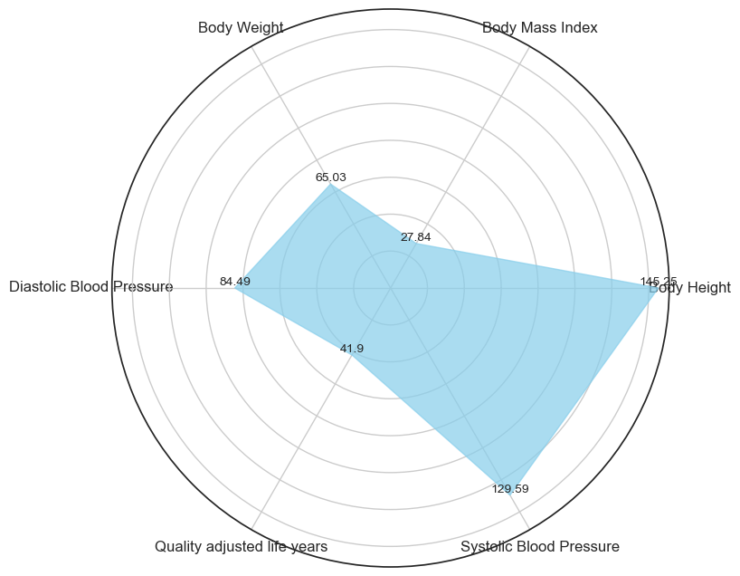
This represents the average vital signs of our patients.
Pulmonary Diseases EDA
PULMONARY DISEASES BY RACE
# Get the columns ending with '_CONDITIONS'
condition_columns = [col for col in lungs.columns if col.endswith('_CONDITIONS')]
# Melt the DataFrame to long format
melted_df = pd.melt(lungs, id_vars=['race'], value_vars=condition_columns)
clean_condition_labels = [col.replace('_CONDITIONS', '') for col in condition_columns]
plt.figure(figsize=(12, 6))
plt.grid()
sns.barplot(x='variable', y='value', hue='race', data=melted_df, errorbar=None)
plt.xticks(ticks=range(len(clean_condition_labels)), labels=clean_condition_labels, rotation=45, ha='right')
plt.xlabel('Condition')
plt.ylabel('Proportion')
plt.title('Proportion of Pulmonary Conditions by Race')
plt.legend(loc='upper right', bbox_to_anchor=(1.125, 1))
plt.tight_layout()
plt.show()
It seems as though black patients are the most likely to get acute bronchitis while asian patients are most likely to get chronic sinusitus. This is important as analyzing these conditions together mike give us more mixed results in total.
PULMONARY DISEASES BY ETHNICITY
# Get the columns ending with '_CONDITIONS'
condition_columns = [col for col in lungs.columns if col.endswith('_CONDITIONS')]
# Melt the DataFrame to long format
melted_df = pd.melt(lungs, id_vars=['ethnicity'], value_vars=condition_columns)
clean_condition_labels = [col.replace('_CONDITIONS', '') for col in condition_columns]
plt.figure(figsize=(23, 15))
plt.grid()
sns.barplot(x='variable', y='value', hue='ethnicity', data=melted_df, errorbar=None, palette='tab20')
plt.xticks(ticks=range(len(clean_condition_labels)), labels=clean_condition_labels, rotation=45, ha='right', fontsize=20)
plt.xlabel('Condition', fontsize=20)
plt.ylabel('Proportion', fontsize=20)
plt.title('Proportion of Pulmonary Conditions by Ethnicity', fontsize=20)
legend = plt.legend(loc='upper right', bbox_to_anchor=(1.25, 1), title='Ethnicity')
for label in legend.get_texts():
label.set_fontsize(20)
plt.tight_layout()
plt.show()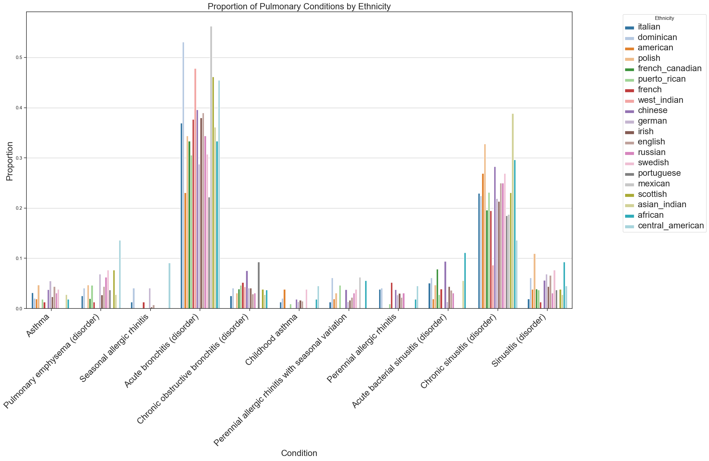
Again, these vary by different diseases. However, we can see that Dominican and Mexican patients are most likely to be diagnosed with Acute bronchitis while Asian Indian patients are far more likely to get Chronic sinusitis.
PULMONARY DISEASES BY BIRTHPLACE
Creating a dataframe of populations of all the towns present in our data (all in Massachusetts), in order to calculate adjusted prevalance.
populations = pd.DataFrame()
unique_birthplaces = lungs['birthplace'].unique()
populations['birthplace'] = unique_birthplaces
populations['pop'] = [37819, 101727, 35313, 93682, 3785, 53896, 87954,
62698, 60803, 5025, 18317, 23662, 1734, 79762, 205319, 1641,
25334, 650706, 6362, 31531, 59922, 6802, 58528, 87381, 19872,
17612, 54980, 25121, 24747, 17489, 35022, 64065, 22992, 6196, 15946, 27395,
44722, 25905, 9806, 11657, 65399, 8485, 15988, 113608, 28854, 4301, 104826,
118488, 29155, 13885, 12265, 23315, 1677, 28501, 67153, 49350, 29327, 10293,
29349, 8270, 154064, 19808, 43310, 29862, 22325, 16593, 6388, 6379, 17619, 14939,
16720, 40971, 31747, 43646, 25050, 38637, 1802, 15702, 15101, 29195, 18448, 16732,
16516, 11048, 7754, 11066, 19948, 4688, 100891, 33792, 18181, 11115, 37286, 100682,
36229, 14570, 46601, 10911, 11625, 17669, 13697, 20902, 10667, 19163, 22666, 10580,
32158, 11777, 1861, 2215, 6347, 64712, 23629, 34307, 752, 9547, 16705, 13866, 18510,
43784, 35744, 21478, 70963, 42844, 40535, 16296, 16127, 7973, 31296, 26123, 3265, 13320,
53241, 3234, 7839, 14749, 8055, 24498, 9640, 42235, 1730, 5798, 37973, 8316, 23923, 18662,
10084, 6975, 15827, 49532, 11964, 136913, 6279, 7214, 17806, 41248, 6358, 10874, 19063, 6569,
23184, 11753, 11386, 2985, 16450, 9182, 7764, 21374, 11802, 41502, 4111, 16053, 6183, 27003,
15710, 6125, 8471, 4963, 29836, 1029, 15227, 10000, 12337, 1793, 491, 4678, 11988, 8168, 28950,
1566, 12904, 57410, 6850, 13427, 11327, 6532, 917, 17456, 25209, 717, 17182, 15168, 12777,
8153, 14313, 13435, 1264, 7884, 9230, 14180, 3056, 12418, 14382, 31248, 10169, 8541, 16188,
36500, 31388, 17027, 16094, 13911, 28385, 9395, 11261, 1489, 12925, 27999, 5943, 16693, 5346,
9811, 27400, 4871, 24296, 12133, 6346, 31635, 11688, 1245, 5284, 5966, 1458, 780, 27135, 316,
5429, 17765, 12629, 3390, 6952, 7144, 2180, 7649, 4907, 5139, 4852, 5125, 5135, 2901, 5398, 4519]condition_columns = [col for col in lungs.columns if col.endswith('_CONDITIONS')]
conditions_summed = lungs.groupby('birthplace')[condition_columns].sum().reset_index()
prevdatalungs = pd.merge(conditions_summed, populations, on="birthplace")
for condition_column in condition_columns:
prevdatalungs[f'prevalence_{condition_column}'] = prevdatalungs[condition_column] / prevdatalungs['pop']for condition_column in condition_columns:
# Filter out birthplaces where prevalence is not zero
filtered_data = prevdatalungs[prevdatalungs[f'prevalence_{condition_column}'] != 0]
plt.figure(figsize=(20, 6))
plt.grid()
sns.barplot(x='birthplace', y=f'prevalence_{condition_column}', data=filtered_data)
plt.title(f'Prevalence of {condition_column[:-11]} by Birthplace')
plt.xlabel('Birthplace')
plt.ylabel('Prevalence')
plt.xticks(rotation=45)
plt.tight_layout()
plt.show()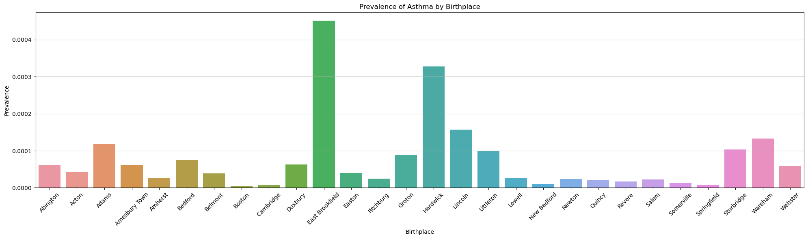
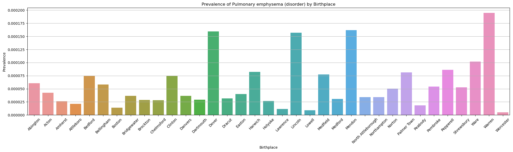
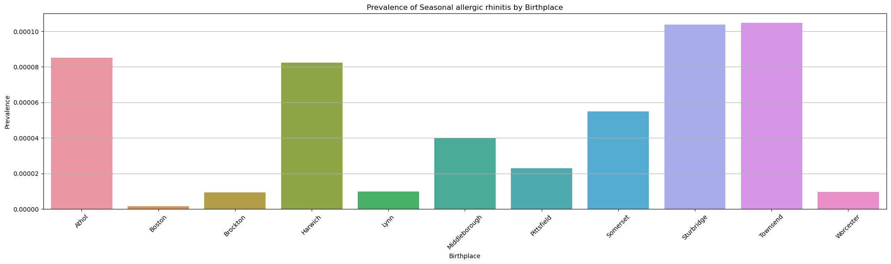
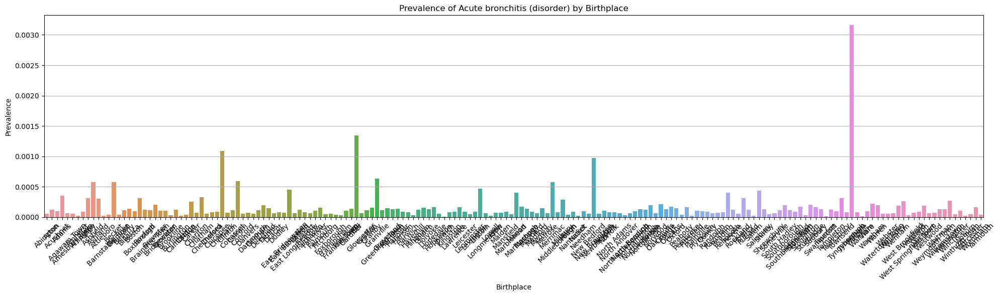
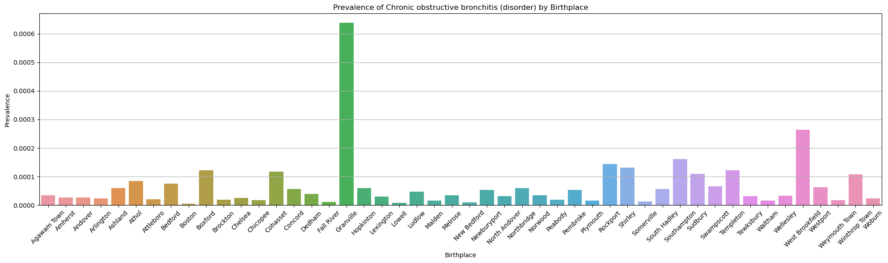
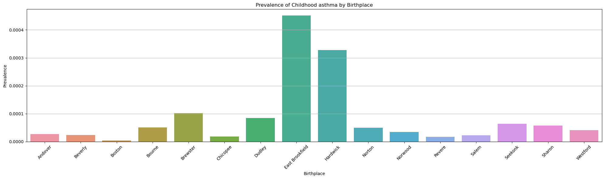
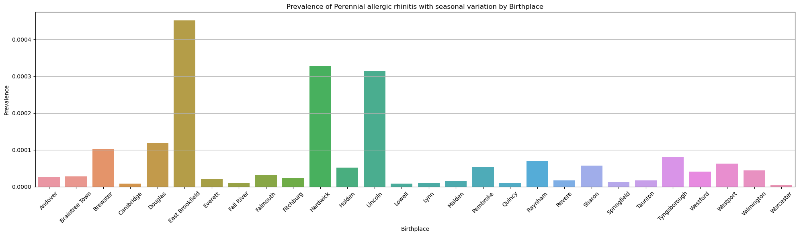
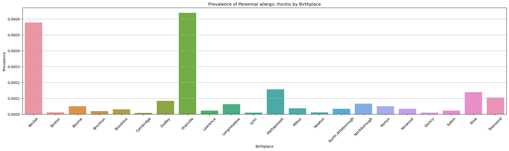
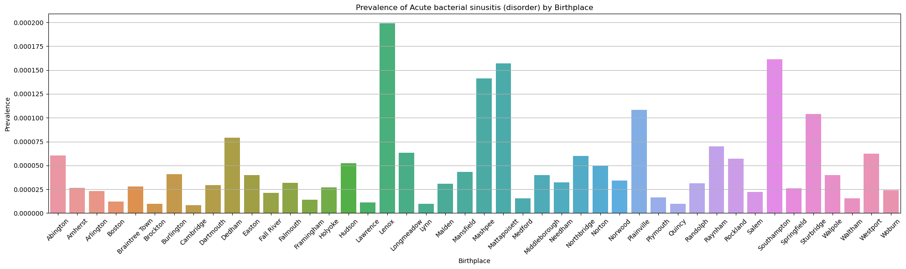
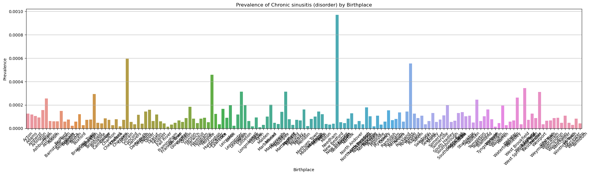
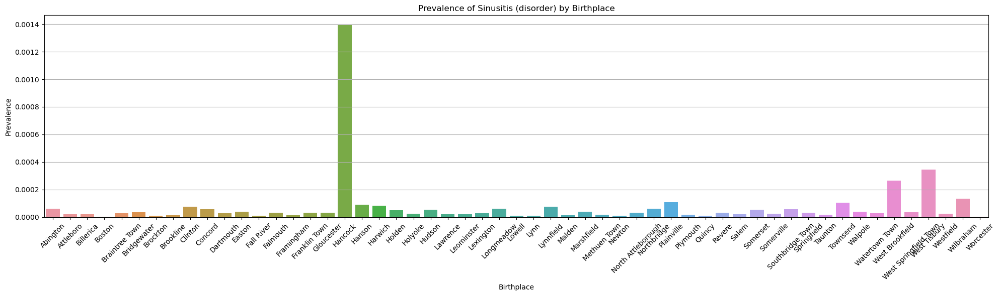
In many of these conditions, it’s worth nothing that one town in particular has a much higher prevelance. Unfortunately, with the vast number of towns and conditions there are so many it is difficult to accurately visualize. However, Hancock is extremely high for Sinusitus. This could be notable as Hancock ranked as the 287th richest town in Mass out of 341, so it is less wealthy compares to others in our dataset.
Cancer EDA
CANCER BY RACE
# Get the columns ending with '_CONDITIONS'
condition_columns = [col for col in cancer.columns if col.endswith('_CONDITIONS')]
# Melt the DataFrame to long format
melted_df = pd.melt(cancer, id_vars=['race'], value_vars=condition_columns)
clean_condition_labels = [col.replace('_CONDITIONS', '') for col in condition_columns]
plt.figure(figsize=(12, 6))
plt.grid()
sns.barplot(x='variable', y='value', hue='race', data=melted_df, errorbar=None)
plt.xticks(ticks=range(len(clean_condition_labels)), labels=clean_condition_labels, rotation=45, ha='right')
plt.xlabel('Condition')
plt.ylabel('Proportion')
plt.title('Proportion of Cancer by Race')
plt.legend(loc='upper right', bbox_to_anchor=(1.125, 1))
plt.tight_layout()
plt.show()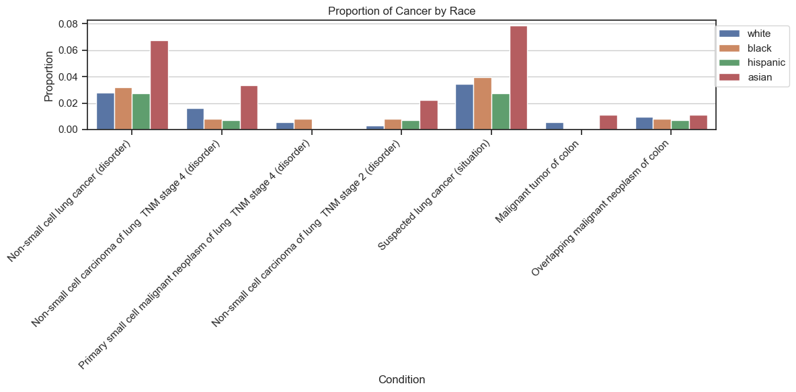
Asian patients seem to dominate many categories.
CANCER BY ETHNICITY
# Get the columns ending with '_CONDITIONS'
condition_columns = [col for col in cancer.columns if col.endswith('_CONDITIONS')]
# Melt the DataFrame to long format
melted_df = pd.melt(cancer, id_vars=['ethnicity'], value_vars=condition_columns)
clean_condition_labels = [col.replace('_CONDITIONS', '') for col in condition_columns]
plt.figure(figsize=(23, 15))
plt.grid()
sns.barplot(x='variable', y='value', hue='ethnicity', data=melted_df, errorbar=None, palette='tab20')
plt.xticks(ticks=range(len(clean_condition_labels)), labels=clean_condition_labels, rotation=45, ha='right', fontsize=20)
plt.xlabel('Condition', fontsize=20)
plt.ylabel('Proportion', fontsize=20)
plt.title('Proportion of Cancer by Ethnicity', fontsize=20)
legend = plt.legend(loc='upper right', bbox_to_anchor=(1.25, 1), title='Ethnicity')
for label in legend.get_texts():
label.set_fontsize(20)
plt.tight_layout()
plt.show()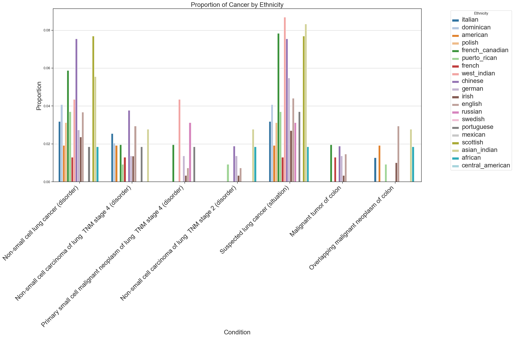
CANCER PREVALANCE BY BIRTHPLACE
condition_columns = [col for col in cancer.columns if col.endswith('_CONDITIONS')]
conditions_summed = cancer.groupby('birthplace')[condition_columns].sum().reset_index()
prevdatacanc = pd.merge(conditions_summed, populations, on="birthplace")
for condition_column in condition_columns:
prevdatacanc[f'prevalence_{condition_column}'] = prevdatacanc[condition_column] / prevdatacanc['pop']for condition_column in condition_columns:
# Filter out birthplaces where prevalence is not zero
filtered_data = prevdatacanc[prevdatacanc[f'prevalence_{condition_column}'] != 0]
plt.figure(figsize=(20, 6))
plt.grid()
sns.barplot(x='birthplace', y=f'prevalence_{condition_column}', data=filtered_data)
plt.title(f'Prevalence of {condition_column[:-11]} by Birthplace')
plt.xlabel('Birthplace')
plt.ylabel('Prevalence')
plt.xticks(rotation=45)
plt.tight_layout()
plt.show()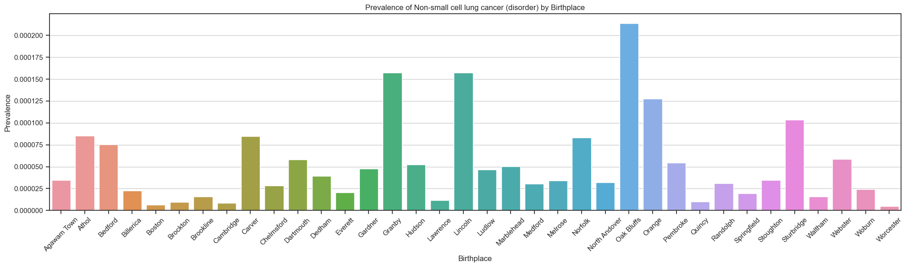
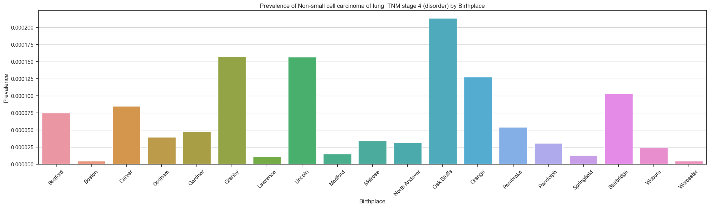
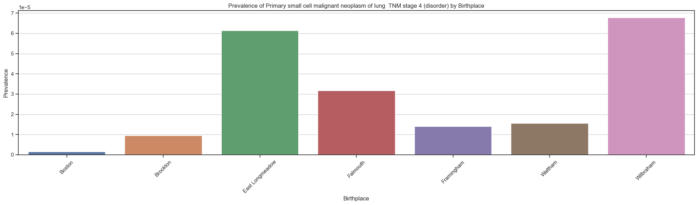
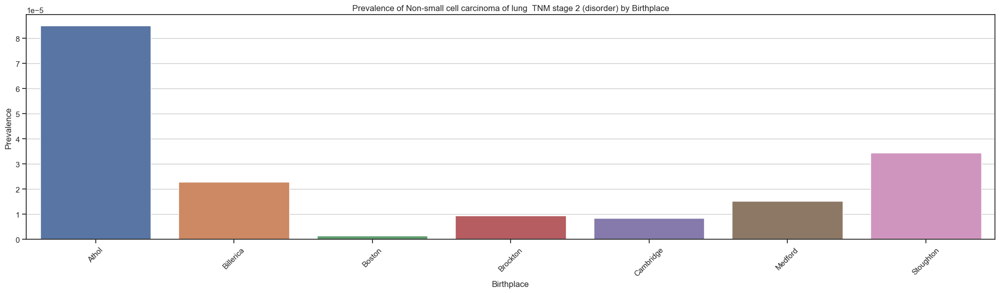
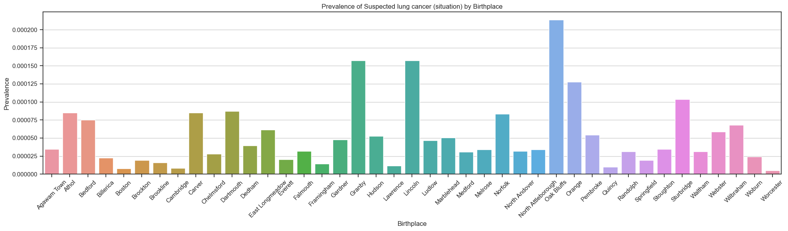

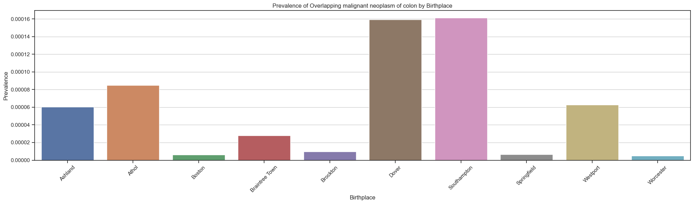
For some cancer types, very few places record incidents. It is harder to draw conclusion for different conditions with this lack of data.
Diabetes EDA
DIABETES BY RACE
# Get the columns ending with '_CONDITIONS'
condition_columns = [col for col in diabetes.columns if col.endswith('_CONDITIONS')]
# Melt the DataFrame to long format
melted_df = pd.melt(diabetes, id_vars=['race'], value_vars=condition_columns)
clean_condition_labels = [col.replace('_CONDITIONS', '') for col in condition_columns]
plt.figure(figsize=(12, 6))
plt.grid()
sns.barplot(x='variable', y='value', hue='race', data=melted_df, errorbar=None)
plt.xticks(ticks=range(len(clean_condition_labels)), labels=clean_condition_labels, rotation=45, ha='right')
plt.xlabel('Condition')
plt.ylabel('Proportion')
plt.title('Proportion of Diabetes by Race')
plt.tight_layout()
plt.legend(loc='upper right', bbox_to_anchor=(1.125, 1))
plt.show()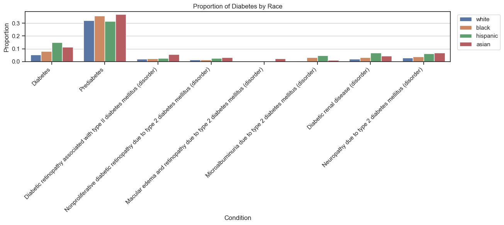
DIABETES BY ETHNICITY
# Get the columns ending with '_CONDITIONS'
condition_columns = [col for col in diabetes.columns if col.endswith('_CONDITIONS')]
# Melt the DataFrame to long format
melted_df = pd.melt(diabetes, id_vars=['ethnicity'], value_vars=condition_columns)
clean_condition_labels = [col.replace('_CONDITIONS', '') for col in condition_columns]
plt.figure(figsize=(23, 15))
plt.grid()
sns.barplot(x='variable', y='value', hue='ethnicity', data=melted_df, errorbar=None, palette='tab20')
plt.xticks(ticks=range(len(clean_condition_labels)), labels=clean_condition_labels, rotation=45, ha='right', fontsize=20)
plt.xlabel('Condition', fontsize=20)
plt.ylabel('Proportion', fontsize=20)
plt.title('Proportion of Diabetes by Ethnicity', fontsize=20)
legend = plt.legend(loc='upper right', bbox_to_anchor=(1.25, 1), title='Ethnicity')
for label in legend.get_texts():
label.set_fontsize(20)
plt.tight_layout()
plt.show()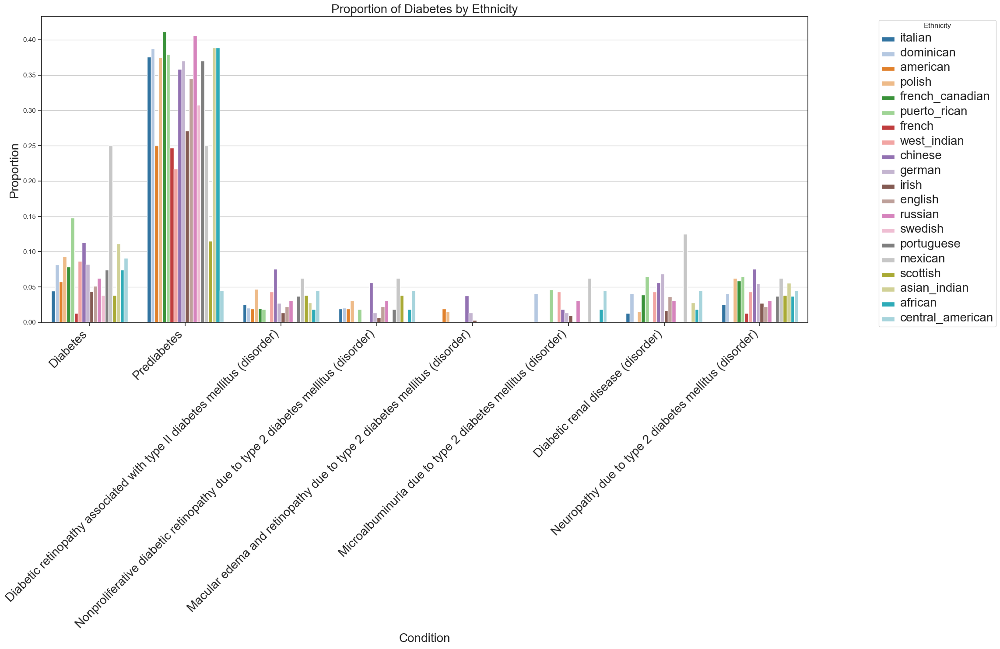
We don’t see significant race of ethnicity disparities for the different diabetes conditions.
DIABETES PREVALENCE BY BIRTHPLACE
condition_columns = [col for col in diabetes.columns if col.endswith('_CONDITIONS')]
conditions_summed = diabetes.groupby('birthplace')[condition_columns].sum().reset_index()
prevdatadiab = pd.merge(conditions_summed, populations, on="birthplace")
for condition_column in condition_columns:
prevdatadiab[f'prevalence_{condition_column}'] = prevdatadiab[condition_column] / prevdatadiab['pop']for condition_column in condition_columns:
# Filter out birthplaces where prevalence is not zero
filtered_data = prevdatadiab[prevdatadiab[f'prevalence_{condition_column}'] != 0]
plt.figure(figsize=(20, 6))
plt.grid()
sns.barplot(x='birthplace', y=f'prevalence_{condition_column}', data=filtered_data)
plt.title(f'Prevalence of {condition_column[:-11]} by Birthplace')
plt.xlabel('Birthplace')
plt.ylabel('Prevalence')
plt.xticks(rotation=45)
plt.tight_layout()
plt.show()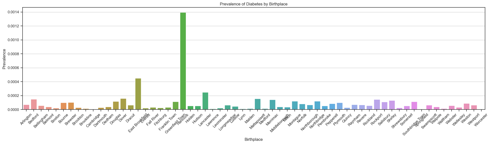
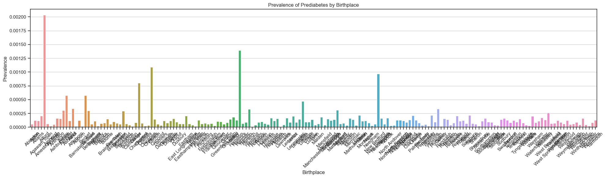
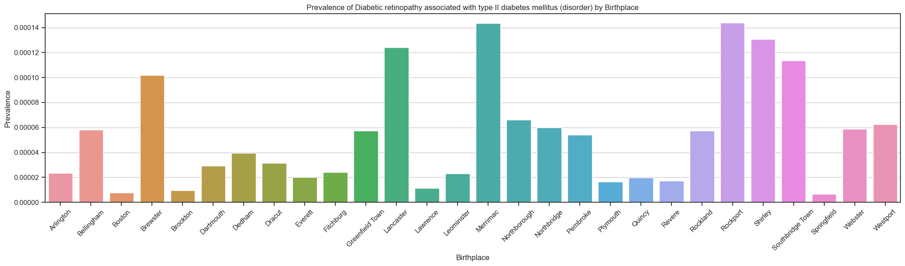
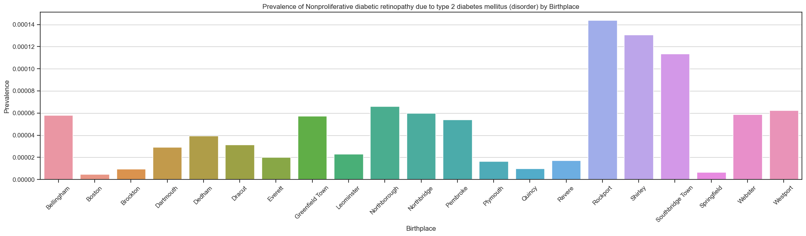
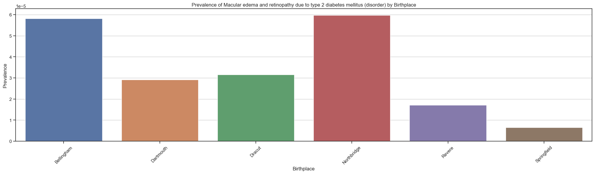
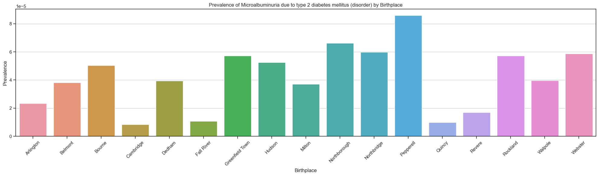
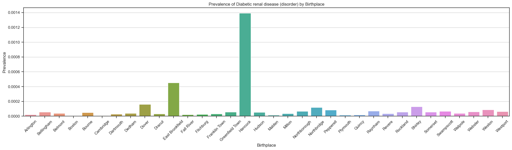
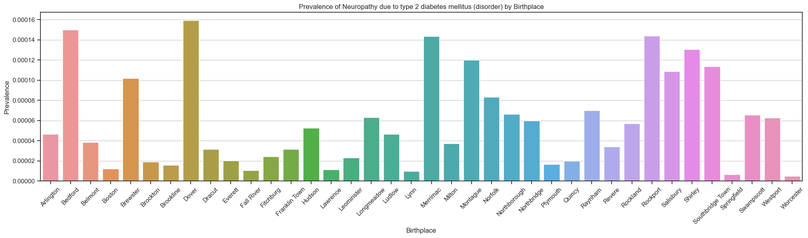
Here there is a mix of some towns dominating prevelance, and some diabetes cormorbidities being generally quite rare.
Cardiovascular Diseases EDA
CARDIOVASCULAR DISEASES BY RACE
# Get the columns ending with '_CONDITIONS'
condition_columns = [col for col in heart.columns if col.endswith('_CONDITIONS')]
# Melt the DataFrame to long format
melted_df = pd.melt(heart, id_vars=['race'], value_vars=condition_columns)
clean_condition_labels = [col.replace('_CONDITIONS', '') for col in condition_columns]
plt.figure(figsize=(12, 6))
plt.grid()
sns.barplot(x='variable', y='value', hue='race', data=melted_df, errorbar=None)
plt.xticks(ticks=range(len(clean_condition_labels)), labels=clean_condition_labels, rotation=45, ha='right')
plt.xlabel('Condition')
plt.ylabel('Proportion')
plt.title('Proportion of Cardiovascular Diseases by Race')
plt.tight_layout()
plt.legend(loc='upper right', bbox_to_anchor=(1.125, 1))
plt.show()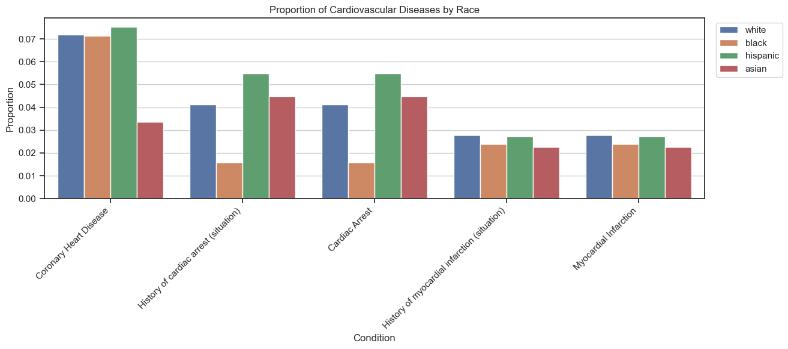
Hispanic patients seem slightly more common in our heart condition dataset.
CARDIOVASCULAR DISEASES BY ETHNICITY
# Get the columns ending with '_CONDITIONS'
condition_columns = [col for col in heart.columns if col.endswith('_CONDITIONS')]
# Melt the DataFrame to long format
melted_df = pd.melt(heart, id_vars=['ethnicity'], value_vars=condition_columns)
clean_condition_labels = [col.replace('_CONDITIONS', '') for col in condition_columns]
plt.figure(figsize=(23, 15))
plt.grid()
sns.barplot(x='variable', y='value', hue='ethnicity', data=melted_df, errorbar=None, palette='tab20')
plt.xticks(ticks=range(len(clean_condition_labels)), labels=clean_condition_labels, rotation=45, ha='right', fontsize=20)
plt.xlabel('Condition', fontsize=20)
plt.ylabel('Proportion', fontsize=20)
plt.title('Proportion of Cardiovascular Diseases by Ethnicity', fontsize=20)
legend = plt.legend(loc='upper right', bbox_to_anchor=(1.25, 1), title='Ethnicity')
for label in legend.get_texts():
label.set_fontsize(20)
plt.tight_layout()
plt.show()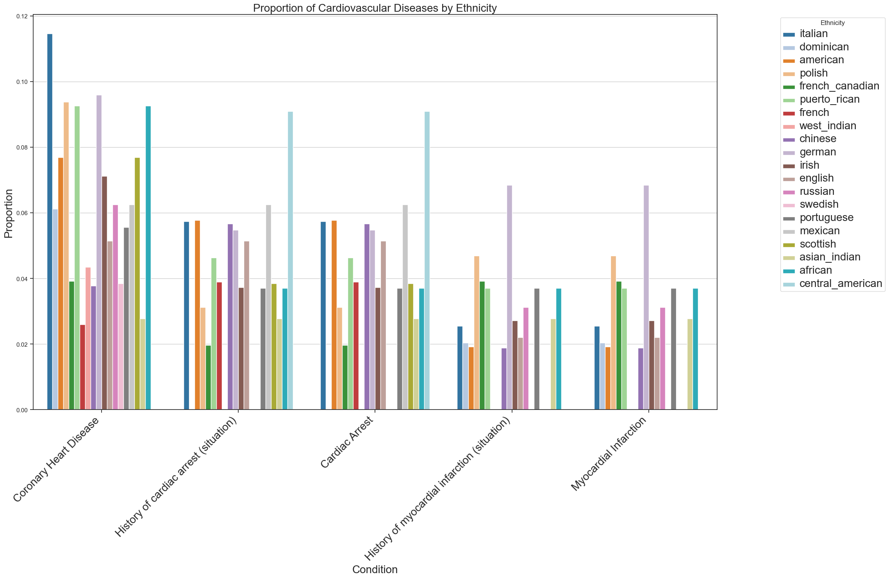
CARDIOVASCULAR DISEASE PREVALENCE BY BIRTHPLACE
condition_columns = [col for col in heart.columns if col.endswith('_CONDITIONS')]
conditions_summed = heart.groupby('birthplace')[condition_columns].sum().reset_index()
prevdataheart = pd.merge(conditions_summed, populations, on="birthplace")
for condition_column in condition_columns:
prevdataheart[f'prevalence_{condition_column}'] = prevdataheart[condition_column] / prevdataheart['pop']for condition_column in condition_columns:
# Filter out birthplaces where prevalence is not zero
filtered_data = prevdataheart[prevdataheart[f'prevalence_{condition_column}'] != 0]
plt.figure(figsize=(20, 6))
plt.grid()
sns.barplot(x='birthplace', y=f'prevalence_{condition_column}', data=filtered_data)
plt.title(f'Prevalence of {condition_column[:-11]} by Birthplace')
plt.xlabel('Birthplace')
plt.ylabel('Prevalence')
plt.xticks(rotation=45)
plt.tight_layout()
plt.show()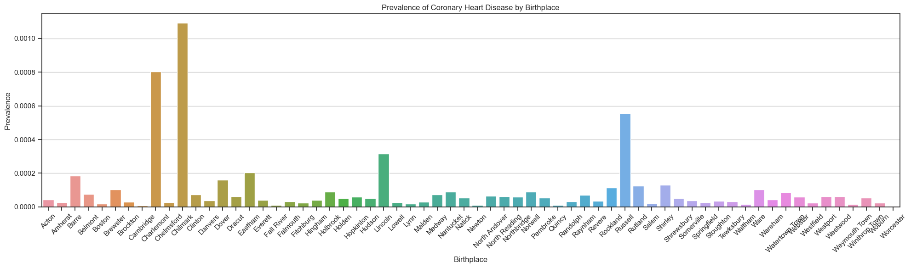
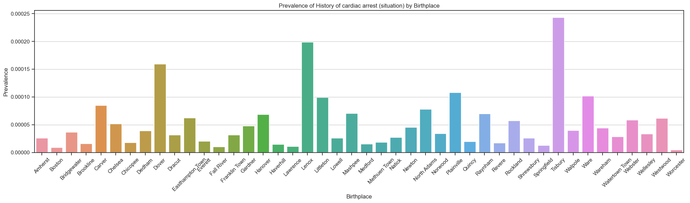
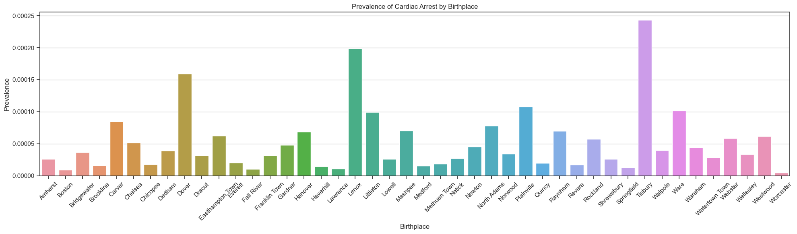
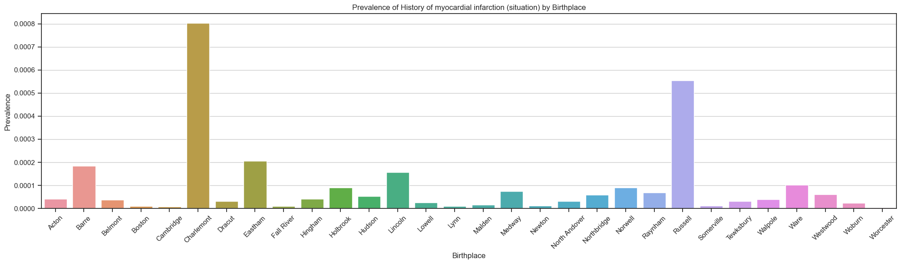
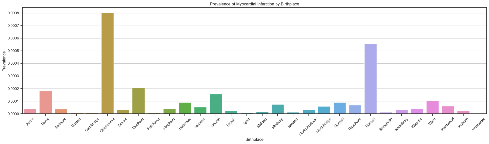
Charlemont and Russell seem to stand out with high levels of heart defects, with a wealth rating of 306 and 280 out of 341 respectively.
Pregnancy Complicationsn EDA
PREGNANCY COMPLICATIONS BY RACE
# Get the columns ending with '_CONDITIONS'
condition_columns = [col for col in pregnancy.columns if col.endswith('_CONDITIONS')]
# Melt the DataFrame to long format
melted_df = pd.melt(pregnancy, id_vars=['race'], value_vars=condition_columns)
clean_condition_labels = [col.replace('_CONDITIONS', '') for col in condition_columns]
plt.figure(figsize=(12, 6))
plt.grid()
sns.barplot(x='variable', y='value', hue='race', data=melted_df, errorbar=None)
plt.xticks(ticks=range(len(clean_condition_labels)), labels=clean_condition_labels, rotation=45, ha='right')
plt.xlabel('Condition')
plt.ylabel('Proportion')
plt.title('Proportion of Pregnancy Complications by Race')
plt.tight_layout()
plt.legend(loc='upper right', bbox_to_anchor=(1.125, 1))
plt.show()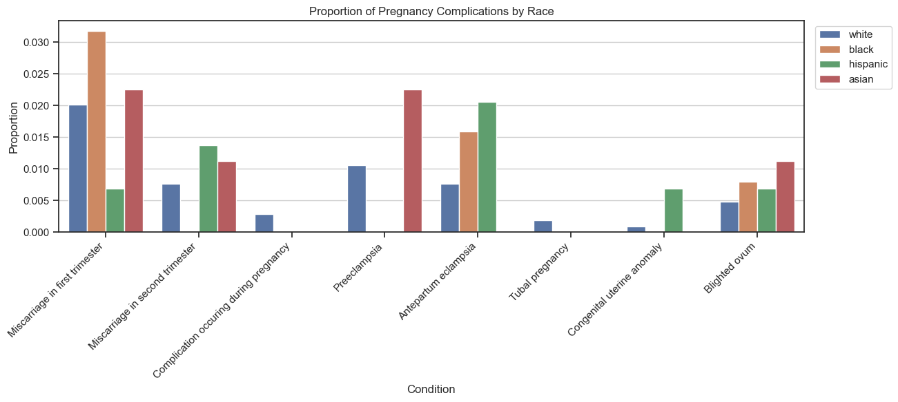
Generally non-white patients seem to have generally higher risks here.
PREGNANCY COMPLICATIONS BY ETHNICITY
# Get the columns ending with '_CONDITIONS'
condition_columns = [col for col in pregnancy.columns if col.endswith('_CONDITIONS')]
# Melt the DataFrame to long format
melted_df = pd.melt(pregnancy, id_vars=['ethnicity'], value_vars=condition_columns)
clean_condition_labels = [col.replace('_CONDITIONS', '') for col in condition_columns]
plt.figure(figsize=(23, 15))
plt.grid()
sns.barplot(x='variable', y='value', hue='ethnicity', data=melted_df, errorbar=None, palette='tab20')
plt.xticks(ticks=range(len(clean_condition_labels)), labels=clean_condition_labels, rotation=45, ha='right', fontsize=20)
plt.xlabel('Condition', fontsize=20)
plt.ylabel('Proportion', fontsize=20)
plt.title('Proportion of Cardiovascular Pregnancy Complications by Ethnicity', fontsize=20)
legend = plt.legend(loc='upper right', bbox_to_anchor=(1.25, 1), title='Ethnicity')
for label in legend.get_texts():
label.set_fontsize(20)
plt.tight_layout()
plt.show()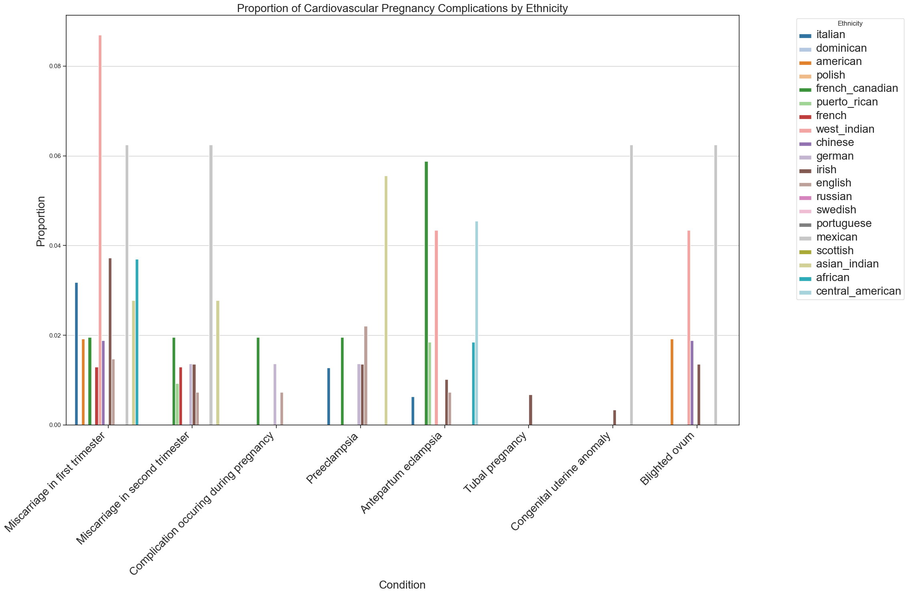
West-Indian patients seem to dominate a few of these conditions.
PREGNANCY COMPLICATIONS BY BIRTHPLACE
condition_columns = [col for col in pregnancy.columns if col.endswith('_CONDITIONS')]
conditions_summed = pregnancy.groupby('birthplace')[condition_columns].sum().reset_index()
prevdatapreg = pd.merge(conditions_summed, populations, on="birthplace")
for condition_column in condition_columns:
prevdatapreg[f'prevalence_{condition_column}'] = prevdatapreg[condition_column] / prevdatapreg['pop']for condition_column in condition_columns:
# Filter out birthplaces where prevalence is not zero
filtered_data = prevdatapreg[prevdatapreg[f'prevalence_{condition_column}'] != 0]
plt.figure(figsize=(20, 6))
plt.grid()
sns.barplot(x='birthplace', y=f'prevalence_{condition_column}', data=filtered_data)
plt.title(f'Prevalence of {condition_column[:-11]} by Birthplace')
plt.xlabel('Birthplace')
plt.ylabel('Prevalence')
plt.xticks(rotation=45)
plt.tight_layout()
plt.show()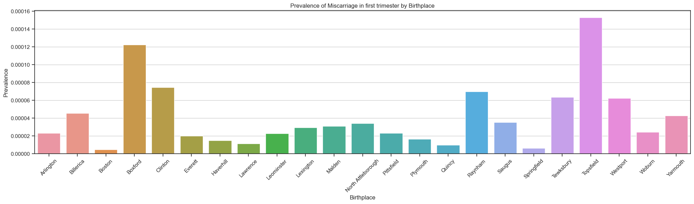
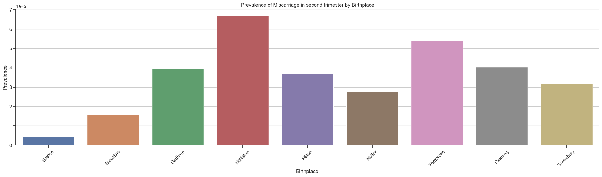
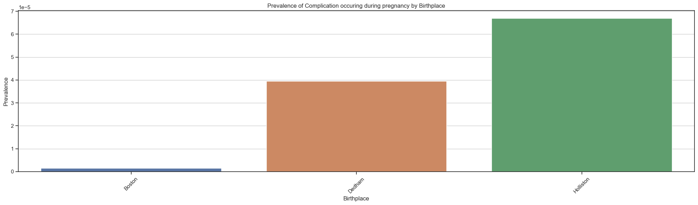
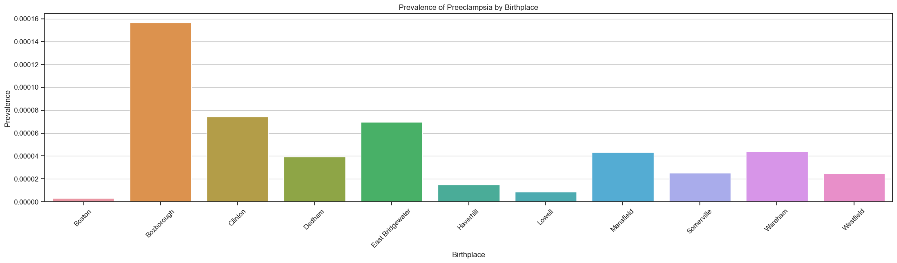
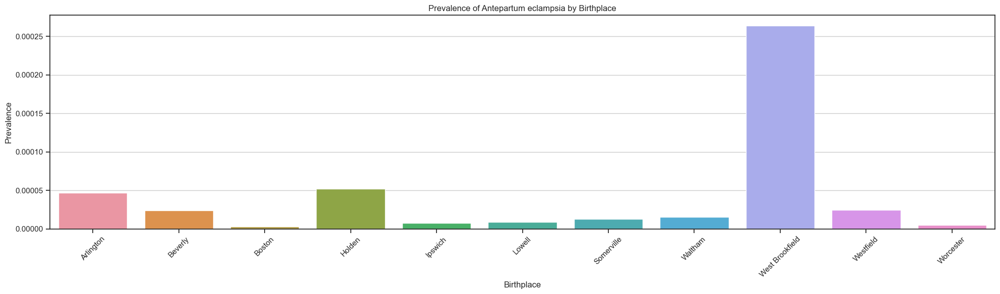
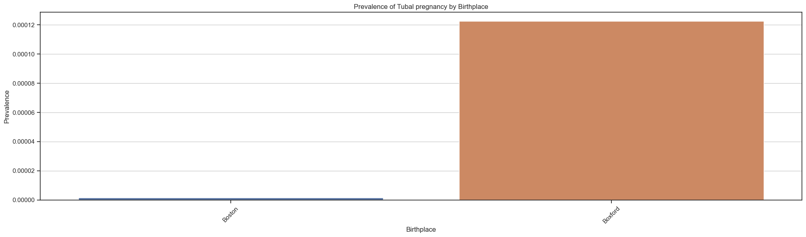
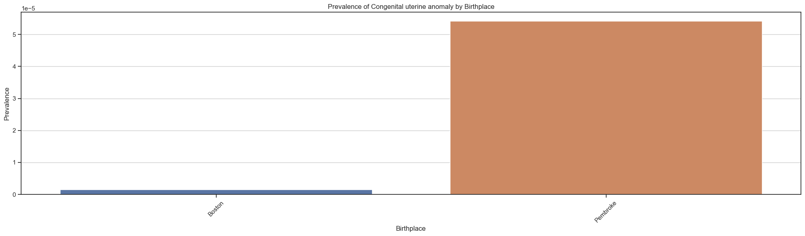
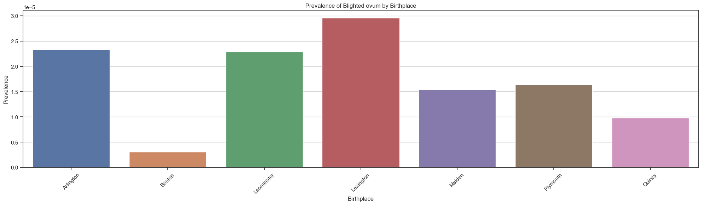
For many here as well there are few towns reporting incidents of these conditions, which could make analysis harder in terms of generalizing trends.